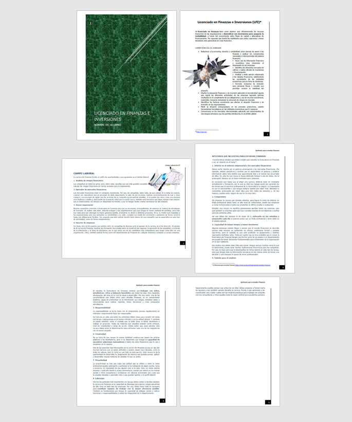
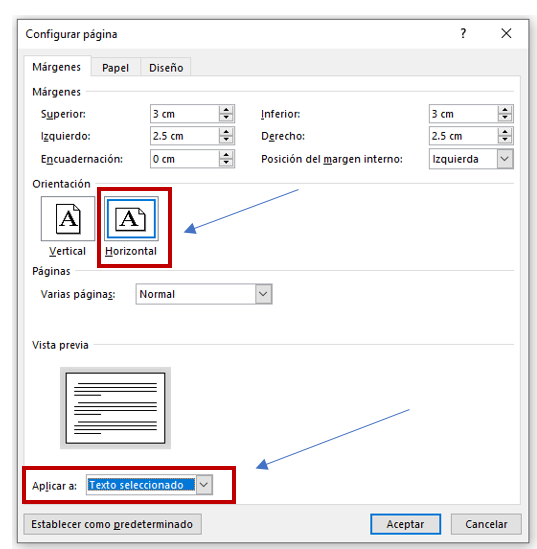
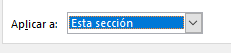
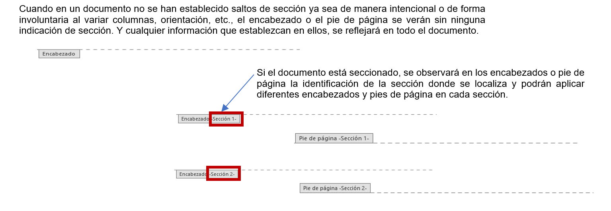
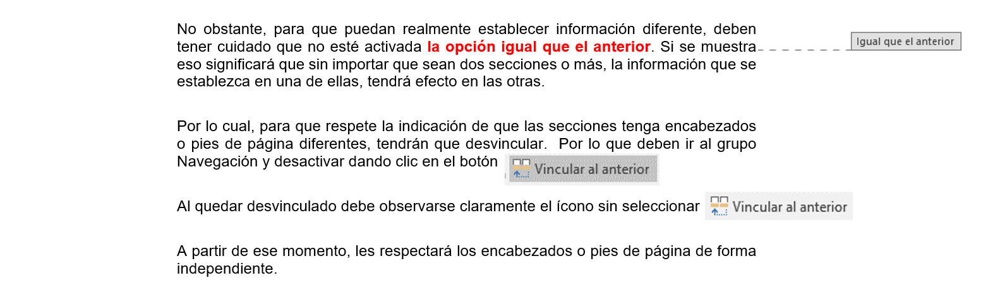

Un Documento en Word se divide en secciones, aunque no lo sepamos, cuando cambiamos la orientación de una página o grupo de páginas, el número de columnas, al marcar opciones en el encabezado o pie de páginas pares e impares diferentes etc. Al crear un documento solo tiene una sección, mientras no se inserte una adicional, no tiene marca visible.
La opción saltos de sección crea de manera intencional una división entre partes de un documento, permitiendo que los elementos que comúnmente se aplican a todo el documento por igual, como la orientación, el pie de página, encabezados, cesen en un determinado punto, para poder configurarlos de forma distinta a continuación. Permite, por lo tanto, poner partes de un documento de una columna con dos columnas, establecer numeración de las páginas preliminares con formato diferente al del cuerpo del documento, usar encabezados diferentes en las páginas pares de las impares, modificar los márgenes de unas páginas en concreto, etc.
INCLUIR Y BORRAR SALTO DE SECCIÓN

.
Por ejemplo, se desea tener el siguiente efecto en un documento, 2 páginas en vertical, una horizontal y el resto en vertical.

La forma más fácil para colocar una sola página en horizontal sin tener secciones en el documento, es seleccionar la información que se encuentra en la página de nuestro interés, ir al grupo Configurar Página de la pestaña Formato y cambiar la orientación a horizontal, además de considerar Aplicar a Texto Seleccionado. Word automáticamente creará las secciones, lo mismo que sucede al crear columnas.

Si el documento ya está seccionado para esa página, solamente deben ir a configurar y al cambiar la orientación decirle

EFECTO DE SECCIONES EN ENCABEZADOS, PIE DE PÁGINA Y NUMERACIÓN DE PÁGINA

